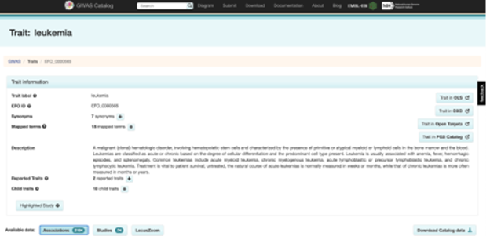
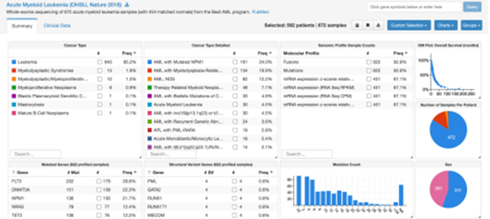

Integration of GWAS and eQTLs APIs
Explored by:
PIMPLASKAR, ADITYA, LI, TERENCE WENTAO, KIM, SANDY SUNG- (Bioinfo 201 - Winter 2022)
Description:
Task:
Given a set of GWAS hits for a cancer like leukemia, retrieved from the GWAS Catalog (through gwasrapidd querying in R), can we detect genes that are variably expressed? In other words, can we map these GWAS hits as expression quantitative trait loci (eQTLs) in leukemia cells, or any other cancer type (queried through cBioPortal)?
Background:
For a particular cancer type, you find a set of associated SNPs and are interested in their downstream regulation on gene expression. You want to try to track any functional association of these variants on cancer gene expression pathways. Being able to track these associations can provide a more thorough view of cancer biology, while also potentially allowing for the investigation of targeted therapeutics.
Goal:
Detect downstream effects of GWAS hits on gene expression in the target cancer EFO trait.
Method:
- GWAS variants: Query the GWAS Catalog with the ‘leukemia’ EFO trait, using the
get_studiesfunction to retrieve relevant studies. Extract rsids top significant GWAS hits from query using theget_variantsfunction. These are the variants that we will investigate as potential eQTLs. We restrict the analysis to cis-eQTLs (variants localized within the region of the gene).

- cBioPortal and gene expression analysis: cBio portal houses datasets that have linked mutation and gene expression data. We cross-reference our discovered GWAS hits against available mutations, and perform eQTL analysis on these mutations with nearby genes.

Expected outcome:
Linked gene and SNP pairs for the target EFO trait and their significance. This may yield insight into variants that can regulate gene expression.